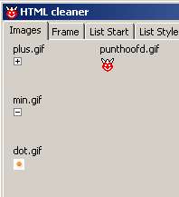

september, 2005
Generating WebSites
From every branch in the treeview a framed website can be created, verified and uploaded, with just a few mouseclicks. Let's start with an example, which is far more clear than all my words. Here is view of part of the treeview, where I want to make website from:
and here is the website created from it, by RM-menu "Generate WebSite".
The website is created, starting at the selected branch of the treeview upto the next branch at the same level. The first branch starts always expanded, while the other branches starts collapsed. In this way you can use the first branch for often used items or announcements like "New". Clicking on a title, + , - , toggles expansion / collapse of branches.
Example step by step
This examples supposes that you already have a number html-pages about the subject to be published.
|
Start with a new item in the treeview (here JALcc Home), set it as a new html-file, give it a filename with the word "frame" in it (here JALcc_frame.html) place it in the same directory as the available html-pages (or preferable on level up). Don't edit this document, because it will be filled in by the program. |
|
Now add (drag&drop) html-files to this newly created node, either from other parts of the list or from a normal windows explorer. In this example 4 files are dropped on the icon of item "JALcc Home". Because the 4 files in this example all had a nice html-title, the title of each page is shown in the treeview (instead of the filename).
Now select the newly created item (JALcc Home), right click, and select "Generate WebSite". Now a modal form will popup, with all the templates, preview and verify windows.
If you're convinced your pages are correct, yes press UPLOAD and all pages will be uploaded to your website.
In case of doubt, you'ld better perform some tests, by pressing VERIFY.
And of course you can change one or more of the templates.
Website verification
This function can check and correct a complete website. The website is assumed to start in the directory of the current document, and checks this directory and all it's subdirectories.
After selecting the actions to be performed, pressing the GO-button will execute all tasks.
Change local files+links to lowercase
Because on Unix machines (most webservers) lowercase and uppercase are assumed different, it's essential that the case of links is correct. Testing the website locally on a windows machine, won't reveal these errors. So here you get the possibility to standarize on lowercase.
First of all, the directory and subdirectories are scanned for uppercase and if such paths are found, they are translated to lowercase.
In windows-XP, although it works, shows a strange behaviour: The path will showup in windows explorer with some uppercase characters. But don't worry, it works !!
After the (sub-)directories are all changed to lowercase, all the filenames are changed to lowercase.
Then all html-files are scanned for "local" links, and if they contain links with uppercase characters, they are converted to lowercase.

Change local tags+links to lowercase
not implemented yet
Change local files+links from "htm" to "html"
Change absolute links to relative

Report local broken links
Reports internal broken links. An internal link is assumed broken, if it's either an absolute link or if the file doesn't exist. This action doensn't perform a case check !!
If the action "convert absolute links to relative" is already done, the action "report broken links" will not detect the absolute addresses (unless the file doesn't exist), because they are all fixed.

Below the same scan as above, but now "convert absolute" was also on.
In this case the "ABS" broken links will be missing (because they are already fixed).
By double-clicking a broken link, the editor will open at the position of the broken link, so you can correct it right away.
Report external broken links
not implemented yet.
This might be a problem nowadays, because when a link get's broken, most webservers show some kind of ad-page for their own services.
Report empty files
Some uploaders, like SSH, have problems (hangs) when they try to upload an empty file.
Why do empty files exist in the first place ??
Report only
In this mode the selected actions are executedperformed, but not stored on disk.
Some hints
By adding more new or existing files, more frame-pages, you can create a user friendly website in just a few mouseclicks.
A few advises:
Branch with children
A branch that has children can be expanded in two different ways, depending on the filename of that branch (btw, the name of the branch has nothing todo with the filename and is in general equal to the title of the underlying html-file).
If the filename of the branch has the word "frame" in it, the file is assumed to be a subframe, with no real content, so it is only used as the title of the next tree.
If the filename doesn't contain the word "frame" , then the branch is assumed to have relevant content and therefor, it's both used as the title of the next tree, but it will also be included as the first child of that same tree.
This feature opens the possibility to create sub-websites from the same treeview.
Standard template files
The standard gifs used in the website generation should be available in the directory where the initfile of PuntHoofd resides (initially they will be copied from the PuntHoofd executable directory). On generating the the website, they are copied to the website location, unless files with these names already exists in that directory. So by putting your own images in the initfile directory, you'll ensure that all websites will get the same images. By putting images in a generated directory, these new images will be used in the future for this website (path) only.
The standard pictures can easily be changed by clicking onone of the images. If for instance you click on the plus.gif image, you can select another gif-image that will be copied to "plus.gif".

The template_frame.txt file definies the frame and can be edited (by editing, you only change the file in the final directory). The file may contain 3 items that will automatically be replaced by JALcc:
%title will be replaced by the title of the first page
%indexpage will be replaced by a link to the treelist
%mainpage will be replaced by a link to the first (main) page
Template_List_start.txt contains the first part of the treelist, in this example, besides the javascript for the tree control it contains a search box that starts a php script. The parameter %collapse_id will be replaced by JALcc to a number of calls to close all the treenodes (except the first) at startup.
Templates_List_style.txt contains all the style elements of the treeview. In this example it contains a lot more which I should be removed some day when I've time to understand this style code.
IE / Mozilla view
I would like to test my websites on both browsers, but unfortunatly the interface to the Mozilla activeX component is too unstable at the moment, so only IE-view is shown. These browser are fully functional, so can step through the complete website.
Uploading
This looks like an awfull lot of complex work, but normally you've to fill in it only once and parts are filled in automatically.
There are a number of macro substitutions that can be used, in specifying the parameters for the upload program:
The FTP program, used to upload all the necessary files to the website, must be a commandline uploader, in which you can pass the password through the commandline. I've good experiences with Putty and his derivates. PSFTP doesn't work for my site (the last slash always gets lost), but PSCP works perfectly. .
By pressing "Start Upload & Exit", the FTP program is started in the background (minimized), and the web generation window is closed.